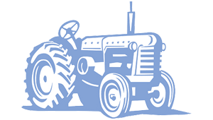
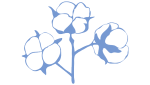
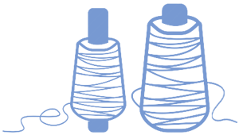

KNOW ABOUT OUR COMPANY
DRIVEN BY INNOVATION & TECHNOLOGY
OUR GROUP COMPANIES
KVK TRADELINK
KVK TRADELINK & SANVI FIBERS PVT LTD under proprietorship of Mr. Keval Jotaniya enhance trade of wide range of Quality Yarns and PP Woven Fabric across globe.
LAXMI COTTON INDUSTRIES
Lakshmi Cotton Industries is one of the group companies of Sanvi having yielding capacity of 250 cotton bales per day. These are the only bales mainly used in Sanvi's yarn production.
SANVI POLYFAB LLP
Sanvi Polyfab LLP was founded in 2021. It leads in manufacture and export of PP(Polypropylene) Woven Fabric, PP Woven Bags and FIBC bags in India with production capacity of 800 MT of Fabric/Month.
SANVI SPINTEX LLP
Sanvi Spintex LLP, a spinning unit with production capacity of 55,500 spindles came into action in 2022.
FROM FARM TO YARN


